Create Virtual Machines
Create two virtual machines to simulate an enterprise Active Directory environment: a Windows Server VM as the Domain Controller and a Windows 10/11 client VM as a workstation. Both are configured with appropriate resources and basic settings to prepare for domain setup and integration.
VMs Setup
Configure the virtual machines with appropriate resources and basic settings.
Virtual Machines Setup
This project uses two virtual machines to simulate a real enterprise environment:
| Virtual Machine | Purpose | Basic Resources | Key Configuration |
|---|---|---|---|
| (Windows Server) | Acts as the Domain Controller that manages the entire network environment. |
2–4 GB RAM 2 CPU cores 40–60 GB storage |
• Static IP configuration • Active Directory Domain Services (AD DS) • DNS Server role • Domain creation (company.local) |
| (Windows Client) | Client machine used to simulate a real user joining the company domain. |
2–4 GB RAM 2 CPU cores 30–50 GB storage |
• DNS pointed to the Domain Controller • Domain join (company.local) • User login via domain credentials • Used for testing policies and access control |
Virtual Machine Setup Steps (Windows Server 2022 & Windows 11)
In the process of setting up the Vms in the VirtualBox, the following resources and configurations were defined to support the Active Directory environment:
Windows Server 2022 VM Setup
- Operating System: Windows Server 2022
- RAM: 2 GB
- CPU Allocation: 2 Cores
- Storage: 30 GB Virtual Disk
- Prepared for Active Directory Domain Services (AD DS) installation
Windows 11 VM Setup
- Operating System: Windows 11
- RAM: 2 GB
- CPU Allocation: 2 Cores
- Storage: 30 GB Virtual Disk
- Prepared for domain joining to company.local
Screenshot: Virtual Machines Setup in VirtualBox
Overview of the VirtualBox Manager showing all required virtual machines already created and configured for the Active Directory lab environment.
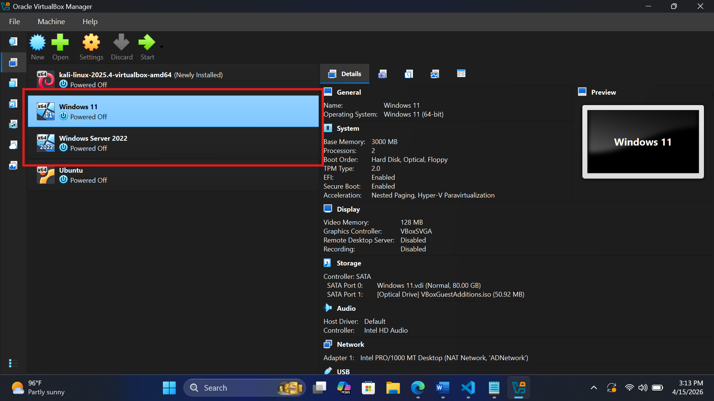
Network Configuration (NAT Network)
The virtual machines were configured using a NAT Network in VirtualBox to simulate a real-world enterprise environment. This setup allowed both internal communication between the Domain Controller and the client machine, while still providing internet access for updates and system configuration.
- Enabled communication between multiple virtual machines within the same network
- Provided internet access for system updates and package downloads
- Simulated a real enterprise network environment for Active Directory deployment
Screenshot: NAT Network Creation in VirtualBox (AD-Network)
Display of the VirtualBox Network Manager showing the creation and configuration of a NAT Network. This serves as the foundation for communication between the Domain Controller and the client machine.
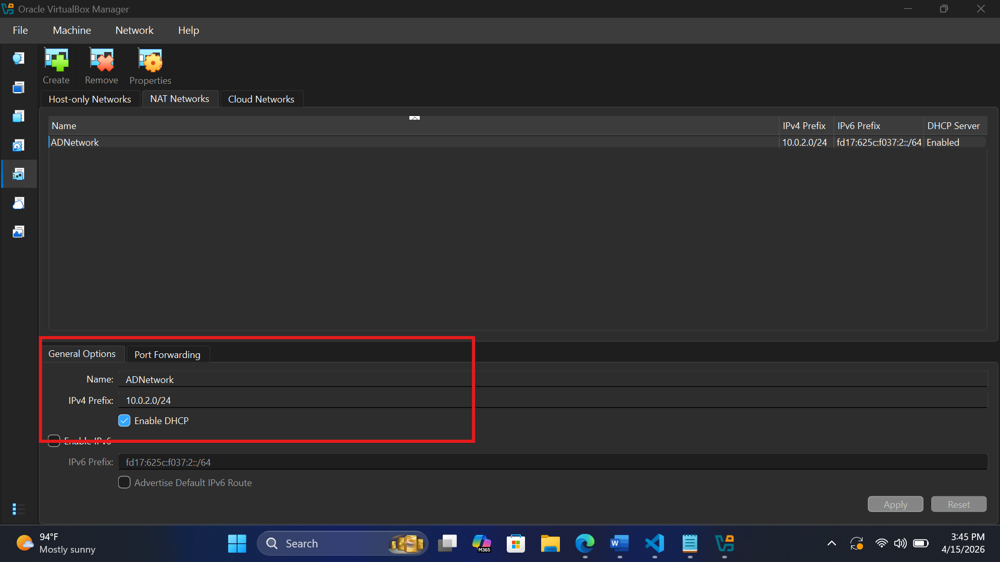
NAT Network IP Prefix Explanation
The IP prefix (e.g., 10.0.2.0/24) defines the network range used by the virtual machines within the NAT Network. It determines how IP addresses are assigned and ensures all systems are part of the same subnet, enabling proper communication between the Domain Controller and client machines.
- The network address (10.0.2.0) identifies the overall network
- The “/24” subnet allows up to 254 usable IP addresses
- Ensures all virtual machines can communicate within the same network
- Supports proper DNS resolution and domain functionality in Active Directory
Screenshot: Windows Server 2022 Network Configuration
Configuration of network adapter settings inside the Windows Server 2022 virtual machine, ensuring it is connected to the NAT Network and properly assigned for Active Directory setup.
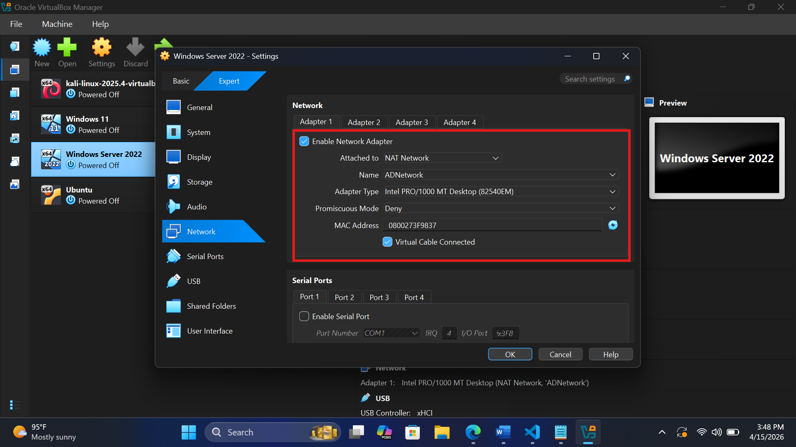
Screenshot: Windows 11 Client Network Configuration
Configuration of network settings inside the Windows 11 client machine, ensuring it is connected to the same NAT Network as the Domain Controller and prepared for domain joining.
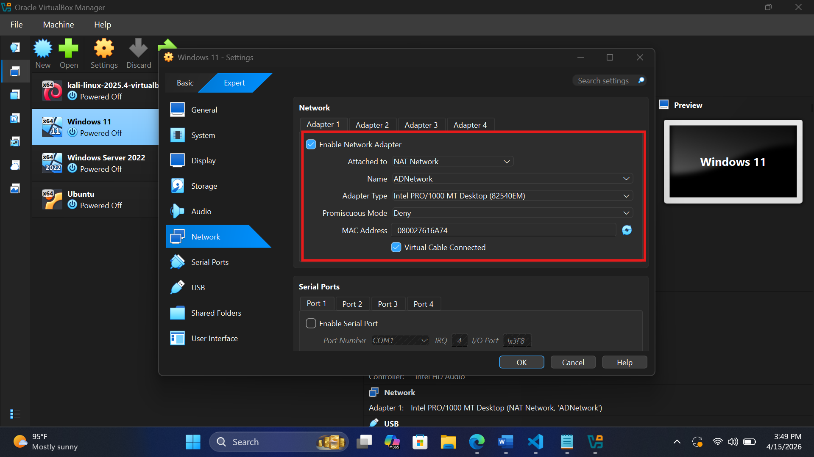
Set Static IP Address
This stage ensures the server is configured with a stable and consistent network identity. Setting a static IP address prevents changes that could disrupt communication, ensuring the Domain Controller can always be reliably located by client machines and services within the network.
Static IP Address
Assign a static IP address to the server for consistent network identification.
Why Setting a Static IP is Extremely Important
Assigning a static IP address to the Domain Controller is a critical step in building a stable and reliable network. In an Active Directory environment, many core services depend on consistent communication with the server. A static IP ensures that the server can always be located without interruption:
- It provides a permanent and consistent address for the Domain Controller, preventing connectivity issues caused by changing IP addresses
- It ensures DNS services function correctly, allowing clients to reliably locate the domain and authenticate users
- It prevents failures in domain-related services such as login, Group Policy application, and resource access
- It guarantees that client machines can always connect to the server using a known and stable address
- It supports overall network stability, making troubleshooting easier and reducing unexpected downtime
How I Configured to Static IP Address for the Domain Controller
- Navigated to Control Panel → Network and Internet → Network Connections
- Right-clicked on Ethernet and selected Properties
- Opened Internet Protocol Version 4 (IPv4) settings
- Selected “Use the following IP address” for manual configuration
- Assigned IP Address: 10.0.2.5
- Set Subnet Mask: 255.255.255.0
- Configured Default Gateway: 10.0.2.1
- Set Preferred DNS to the server’s IP (127.0.0.1)
- Applied the configuration and verified using ipconfig
Screenshot: Setting Static IP Address in control panel
Configuration of the static IP address for the Domain Controller using the Control Panel network settings. This ensures the server has a consistent network identity crucial for Active Directory functionality.
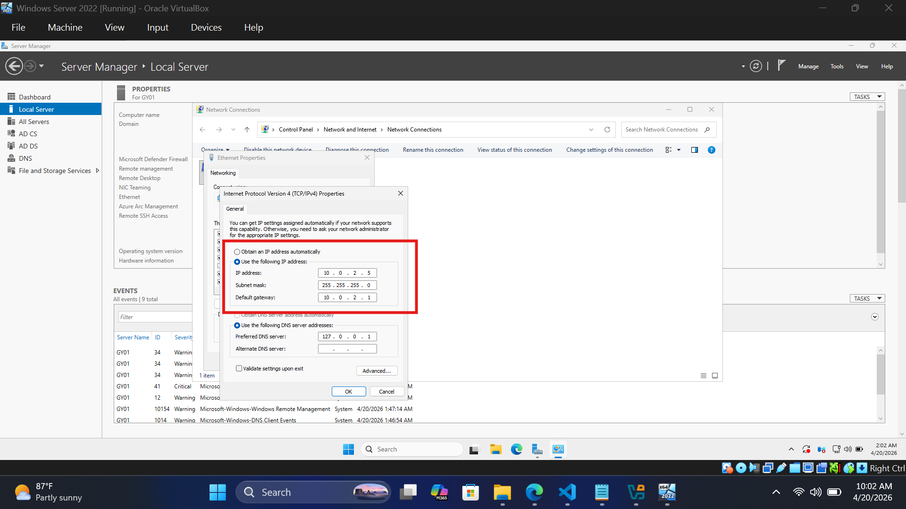
Screenshot: IP address shown in command prompt
Verification of the static IP address configuration using the ipconfig command in the command prompt.
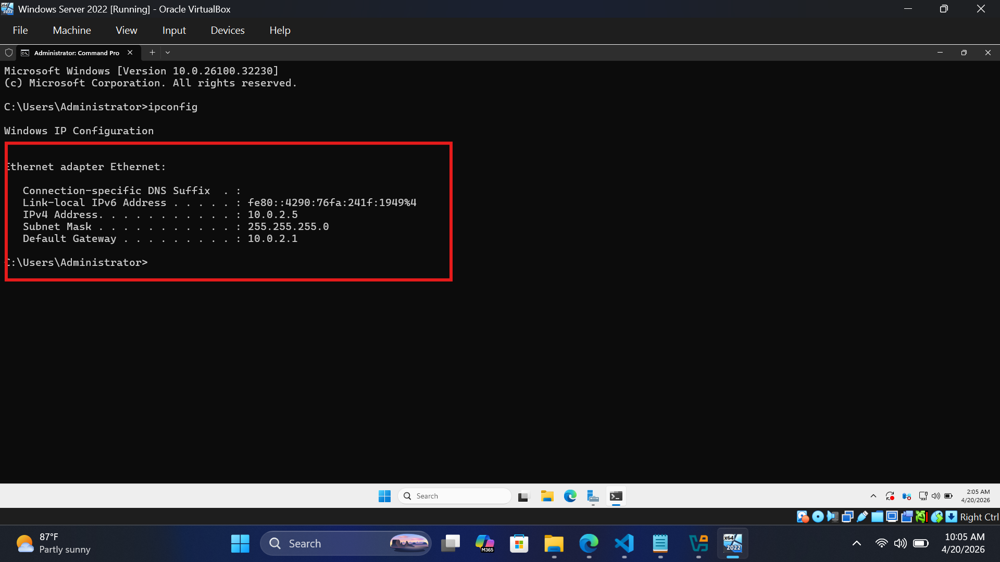
Rename the Server
Renaming the server to a meaningful name (e.g., GY01) is an important step in organizing and managing the Active Directory environment. A clear and descriptive server name helps administrators easily identify the server’s role and purpose within the network, improving overall clarity and efficiency in administration.
Changing the Server Name
Follow these steps to rename the server:
Steps to Rename the Server (GY01)
- Press Windows + R, type sysdm.cpl, and press Enter
- Navigate to the Computer Name tab in the System Properties window
- Click the Change button to modify the computer name
- Enter the new server name as GY01
- Click OK to confirm the changes
- When prompted, click Restart Now to apply the new name
- After reboot, open Command Prompt and run hostname to verify the change
Screenshot: Terminal Showing New Server Name
After renaming the server and rebooting, the Command Prompt displays the new hostname (GY01), confirming that the server has been successfully renamed.
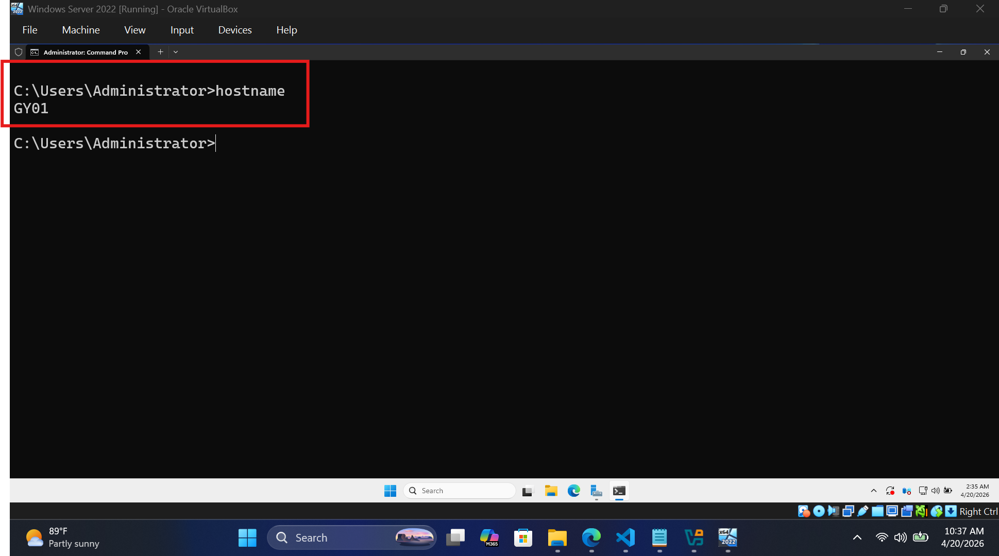
Why Renaming the Server is Important
- Ensures the server has a clear and professional identity within the network
- The server name becomes part of Active Directory and DNS records
- Helps administrators easily identify the server’s role (e.g., Domain Controller)
- Prevents complications that can occur if renaming is done after Active Directory installation
- Aligns with real-world IT naming conventions used in enterprise environments
- Improves organization and management as the network grows
Install Active Directory Domain Services
Installing Active Directory Domain Services (AD DS) is a critical step in setting up a domain environment. This process involves promoting the server to a domain controller and configuring the necessary domain settings.
Install AD DS Role
Install the Active Directory Domain Services role on the server.
Steps to Install AD DS
- Open Server Manager from the Start menu
- Click Manage in the top-right corner
- Select Add Roles and Features
- In the wizard, click Next on the Before You Begin screen
- Select Role-based or feature-based installation and click Next
- Ensure your server GY01 is selected, then click Next
- Scroll and check Active Directory Domain Services (AD DS)
- When prompted, click Add Features
- Click Next through the Features section
- Review the AD DS information page and click Next
- Click Install to begin installation
- Wait for installation to complete (do not close the window)
Installed AD DS
After the installation of the Active Directory Domain Services role is complete, the Server Manager dashboard confirms that AD DS is installed and ready for configuration.
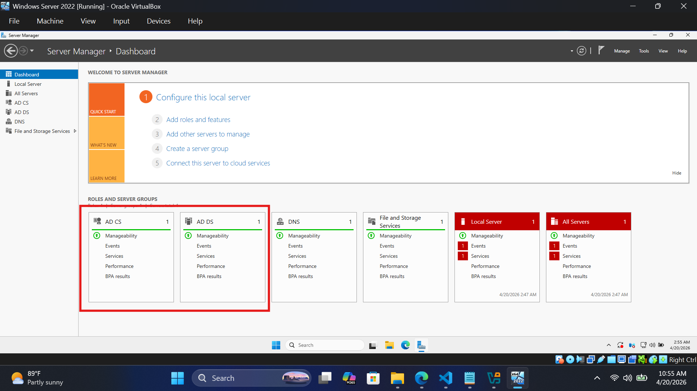
Promote to Domain Controller
After installing the AD DS role, the next step is to promote the server to a Domain Controller. This process involves configuring the domain name, setting up DNS, and finalizing the domain controller settings to establish a functional Active Directory environment.
Promoting the Server to Domain Controller
Configure the server as a domain controller for the Active Directory environment.
Steps to Promote Server (GY01)
- Open Server Manager
- Click the notification flag (⚠️) in the top-right corner
- Select Promote this server to a domain controller
- In Deployment Configuration, select Add a new forest
- Enter the root domain name as lab.local
- Click Next
- Set a Directory Services Restore Mode (DSRM) password
- Click Next through DNS Options (ignore warnings if any)
- Verify the NetBIOS name is LAB
- Click Next through remaining settings
- Click Install to begin promotion
- Wait for the server to restart automatically after installation
Promotion Process Screenshot
After completing the promotion process, the server restarts and is now configured as a Domain Controller for the company.local domain for the Active Directory management. How we know the promotion was successful is by logging in with the new domain credentials and checking tools like Active Directory Users and Computers, DNS Manager.
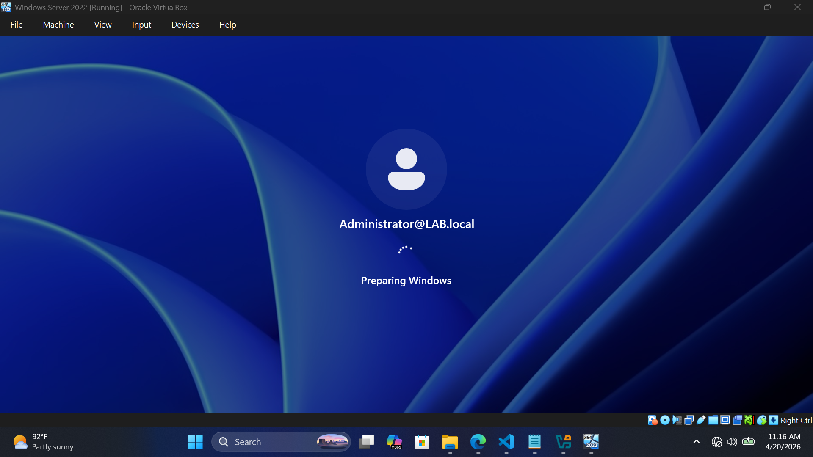
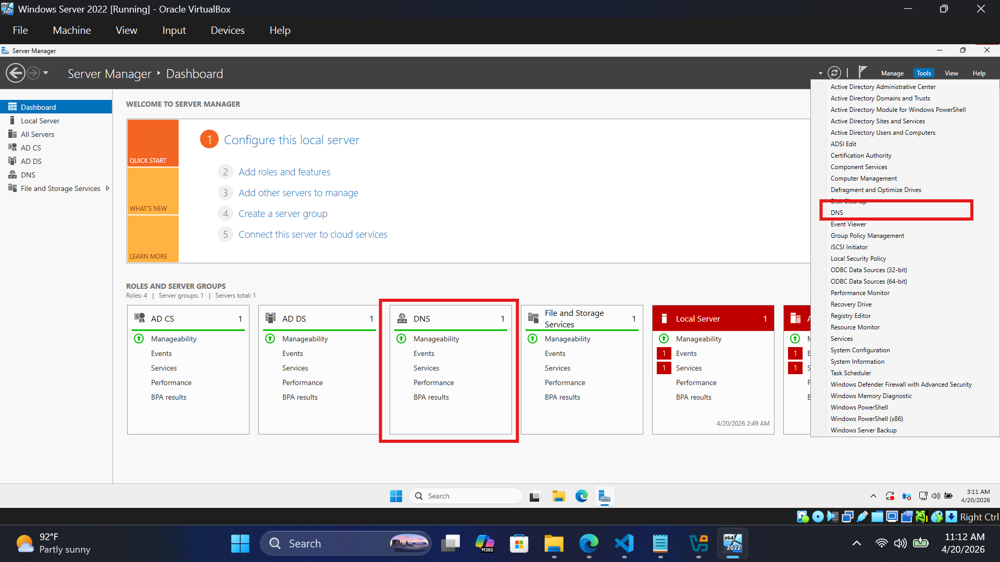
Set up Client Machine to Join the Domain
After the domain controller is established, client machines can be configured to join the Active Directory domain, enabling centralized management and authentication.
Setting Up the Client Machine (Windows 10/11)
Configure the client machine to join the Active Directory domain.
Configure Client PC (WS-01)
- Open System Properties (This PC → Properties)
- Click Rename this PC
- Set the computer name to WS-01
- Restart the computer after renaming
- Open Control Panel → Network and Internet → Network Connections
- Right-click Ethernet → Properties
- Select Internet Protocol Version 4 (IPv4)
- Set Preferred DNS Server to 10.0.2.5 (your Domain Controller)
- Click OK to save settings
- Go back to System Properties → Computer Name → Change
- Select Domain instead of Workgroup
- Enter the domain name: lab.local
- Click OK
- When prompted, enter domain credentials:
- Username: LAB\Administrator
- Password: (your domain admin password)
- Wait for the message: “Welcome to the lab.local domain”
- Restart the client machine
Logging In the Domain in the Client Machine
After joining the domain, the client machine (WS-01) can log in using domain credentials. This confirms that the client is successfully connected to the Active Directory environment and can communicate with the domain
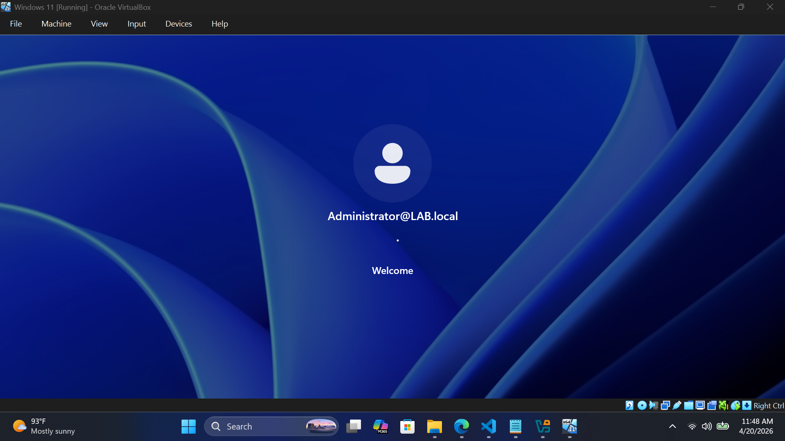
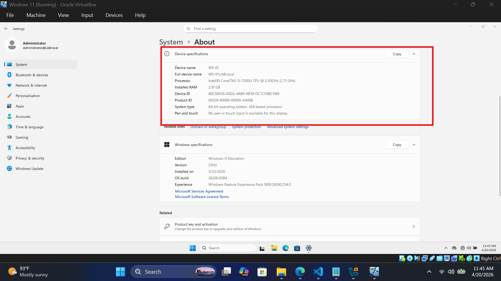